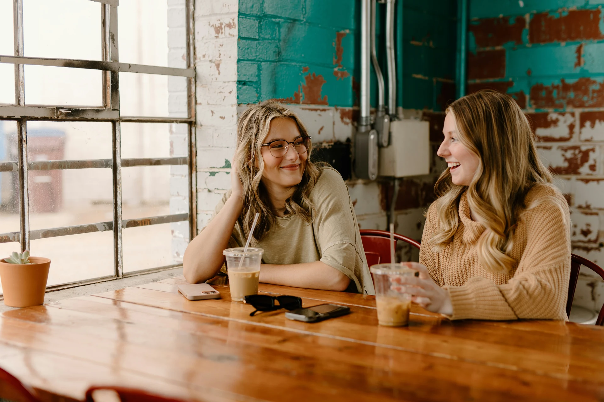

Solidarity Café
Free online conversations about solidarity and social change.
You’re welcome whether you’re already involved in activism or community work, or you’d simply like to meet people who care about the same things.
In each session, we talk in English about the issues that matter to the group, and you’re always welcome just to listen.
Free during the pilot · Online · 55–75 minutes · B1 or above recommended

The next Solidarity Café
We’re arranging the next session now. Email us and we’ll send you the date, the topic and the joining details as soon as they’re confirmed.
- When:
- To be announced
- Duration:
- 55–75 minutes
- Where:
- Online
- English:
- B1 or above recommended
- Cost:
- Free during the pilot
- Access:
- Tell us about any access needs when you get in touch

What happens in a session?
A facilitator hosts each session and makes sure everyone has room to take part. We start with a topic, then share experiences, listen to different views and ask each other questions.
You decide how much to say. Listen while you get to know the group, join in when you’re ready and take a break whenever you need one.
What might we talk about?
Topics come from the questions people face in solidarity and community work. How does a group work through disagreement? What helps new people feel welcome? And how do we stay involved when the work gets hard?

English in the Café
We speak English so that people from many language backgrounds can share one conversation. We recommend intermediate English (around B1) or above: enough to follow the main points of a discussion and explain your own ideas.
The Café is an informal conversation, so there’s no teaching or individual language feedback. If that’s what you’re looking for, try one of our private lessons.
See lessons and pricesFrequently asked questions
Do I have to speak?
No. You’re welcome to listen for the whole session, or join in whenever you feel ready. Both are good ways to take part.
Is the Café therapy?
No. It’s an informal community conversation, and the facilitator’s role is to help everyone take part. We don’t offer counselling or psychotherapy.
Are sessions recorded?
Usually not. We’ll only ever record a session if everyone taking part clearly agrees first.
Can I ask for an access adjustment?
Yes. Tell us about any access needs when you contact us about a session, or email info@najmacollective.org at any time before it. We’ll explain the access options for each session when we announce it.
Join the next Café
Come and talk with other people who care about solidarity and social change. It’s free during the pilot.